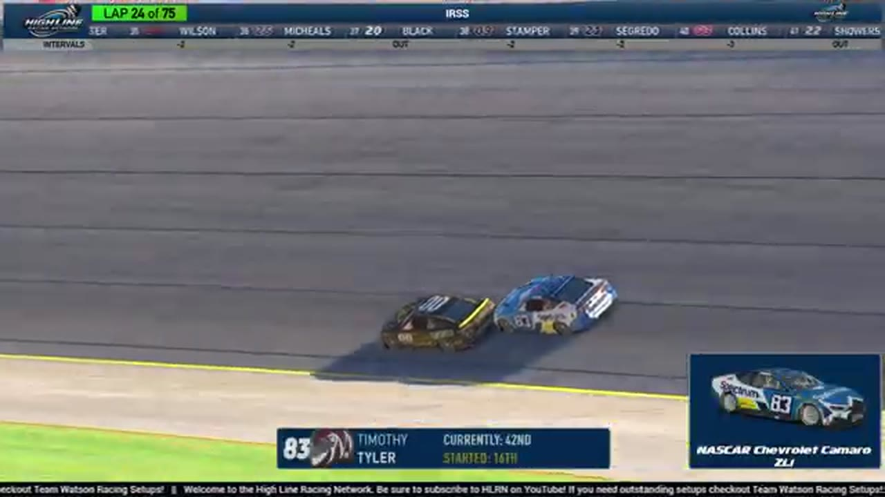

Timothy Tyler
Team assignment not stated in the structured owner record.
AN OFFICIAL-TAPE FOOTPRINT, NOT A RESULTS CLAIM
- Official files
- 20
- Central editions
- 0
- Exact tape cues
- 12
- Accepted podiums
- 0
Timothy Tyler appears in 20 official HLRN broadcast files across Seasons 1, 2. The current result ledger does not assign this driver a supported top-three finish. A consistently stated team affiliation remains open for owner review. The currently indexed source window runs from November 17, 2025 through July 20, 2026.
The primary chapter index supplies 12 direct jump points. Talladega is the most frequent named track in the current appearance ledger. The densest direct-tape categories are incident (2 cues) and restart (2 cues). Those counts describe where the name is easiest to find; they are not fault, pace, or performance grades. A source-attributed car frame is published with its original video and timestamp. That is the current discovery map for Timothy Tyler.
Official name signals are used for discovery only. They do not become starts, points, incident counts, or an ability grade. This page is deliberately detailed about the tape and restrained about the unavailable competition record. Separately, 7 Highline Live files sit on the bonus shelf and never enter the official season ledger. The displayed name is labeled transcript normalized; that status remains visible so an owner roster can strengthen or correct the identity without rewriting the evidence trail. Those boundaries define Timothy Tyler's public HLRN file.
10 featured race-tape cues
These are discovery routes into complete HLRN broadcasts, not performance grades or inferred results.
- S1 / R9 · FINISH
Timothy Tyler enters the final-lap decision
S1 / R9 at 1:43:11: The white flag opens the final-lap decision at Chicagoland, with Timothy Tyler named in the decisive group. The cut continues through the immediate finish call on the full primary broadcast.
Chicagoland - S1 / R9 · BATTLE
Justin Lee Pearson and Brandon Bikey carry the Chicagoland lead battle
S1 / R9 at 1:37:43: The Chicagoland pack compresses in a front-pack fight while Justin Lee Pearson, Brandon Bikey, and Timothy Tyler are named on the call. The chapter keeps the live battle intact and makes no finishing-order claim.
Chicagoland - S1 / R3 · BATTLE
Timothy Tyler and Trevor Haley carry the Charlotte lead battle
S1 / R3 at 44:05: The Charlotte pack compresses in a front-pack fight while Timothy Tyler, Trevor Haley, and Craig Rowe are named on the call. The chapter keeps the live battle intact and makes no finishing-order claim.
Charlotte - S2 / R3 · RESTART
Nick Bowman and Timothy Tyler bring Chicagoland back to green
S2 / R3 at 1:39:07: Nick Bowman and Timothy Tyler are in the booth's front-pack call as Chicagoland returns to green. The cut keeps the restart launch and the first lap of lane development together.
Chicagoland - S1 / R3 · RESTART
Dave Schutt and Timothy Tyler bring Charlotte back to green
S1 / R3 at 1:41:44: Dave Schutt, Timothy Tyler, Scott Wise, and Cory Cook are in the booth's front-pack call as Charlotte returns to green. The cut keeps the restart launch and the first lap of lane development together.
Charlotte - S1 / R3 · STRATEGY
Darkhorse pit stops hand Charlotte's lead cycle to Timothy Tyler
HLRN returns from an earlier incident to find several Darkhorse cars and Matt Brown on pit road. Timothy Tyler cycles to the front while the broadcast notes additional damage signals elsewhere on the track.
Charlotte - S2 / R3 · INCIDENT
Joshua Sprag crosses Trace McDowell to trigger Chicagoland's caution
The broadcast moves from Timothy Tyler to leader Trevor Haley when a caution appears. Replay finds Joshua Sprag moving across Trace McDowell's nose; the earlier on-screen drivers are not assigned to the crash.
Chicagoland - S2 / R1 · INCIDENT
Timothy Tyler spins into Daytona traffic as the caution falls
Shawn Stamper remains in the race before a new wreck brings out the yellow. Trevor Haley receives a damage signal, but the first replay centers Timothy Tyler's No. 83 spinning up the track into traffic.
Daytona - S2 / R4 · FEATURE
EchoPark remembers why the David Boyer Memorial matters
As the drivers leave their meeting, HLRN explains Larkin Boyer's family tradition at EchoPark and the decision to honor his father with the event. The current-race memorial context replaces a prior Chicagoland replay mislabeled as the EchoPark opening green.
EchoPark Speedway - S1 / R14 · QUALIFYING
Richmond's qualifying countdown frames the season run-in
With Darkhorse's leading names on screen, HLRN corrects itself from a green-flag countdown to four minutes before qualifying. The booth then previews Richmond and the two superspeedway rounds that will close Season 1.
Richmond
Verified team history is not consistently stated. No position-specific top-three result is currently accepted. Name normalization remains reviewable against owner records.